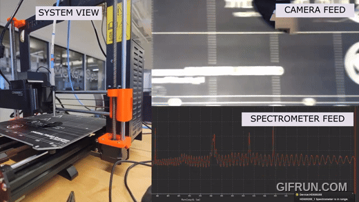
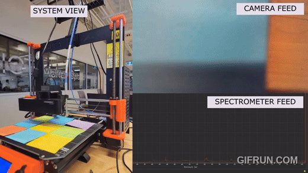
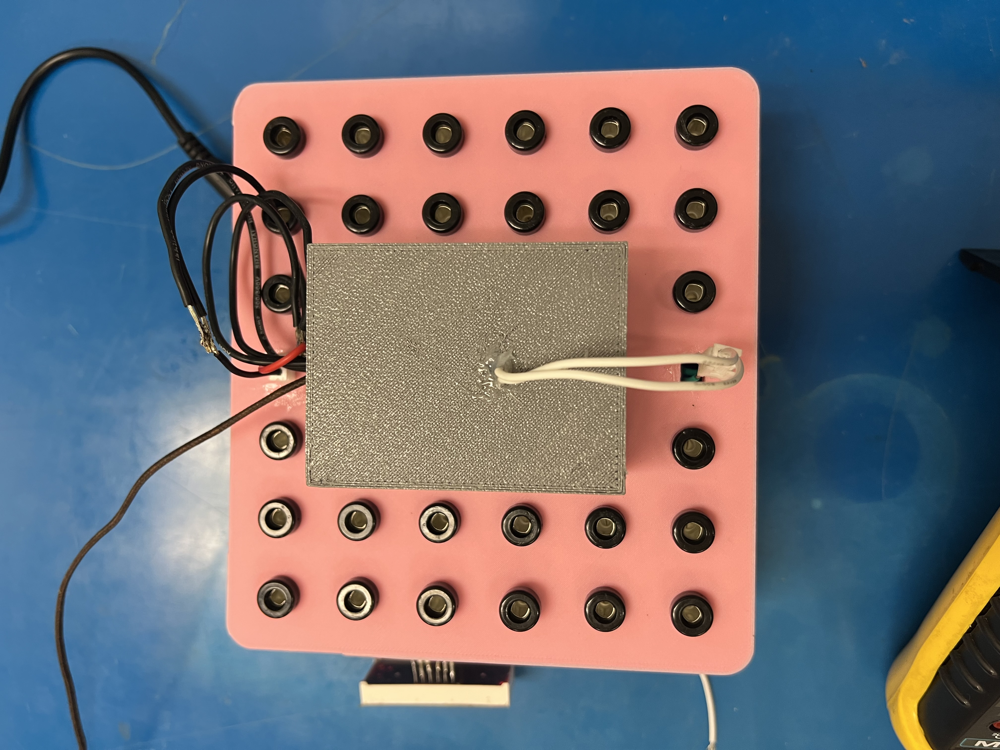

Converted a 3d printer to for spectrometry of thin films.


This project was done in Winter 2026. I had the opportunity to do an URA (Undergraduate Research Assistantship) with Professor Nehaniv at the University of Waterloo. We focused on Hadwiger's Conjecture, a graph theory problem that focuses on coloring. Hadwiger Conjecture asks if we can color a graph so that no two adjacent nodes have the same color using t colors if the graph has no K_(t+1) minor. A minor is a structure in a graph that can be found when the graph is decomposed. So if a graph can be decomposed into another graph it is said to have this smaller graph as a minor. Therefore, a graph with no K_(n) minor doesn't have a Complete graph of n vertices embedded in it. Not sure if embedded is the right word though since that word is really loaded these days. And a Complete graph is just a graph of n vertices where each vertex has an edge to every other edge. So, Hadwiger's conjecture is a very simple, difficult, HUGE problem in graph theory that asks this intuitive question. The reason it's intuitive is since a K_n (complete graph of n vertices) requires a minimum of n colors. So if any graph doesn't have a K_n minor, can it be colored with n-1 colors? I basically rephrased the question with n-1 colors and no K_n minors instead of t colors and no K_t+1 minors! So this was a very fun question to work around with. I wrote code, LaTeX and mathematics during these 4 rewarding months with the group. I then spent some time (2 months) summarizing my studies and released it in the document here: https://www.researchgate.net/publication/407416271_KEMPE_CHAINS_AND_HADWIGER'S_CONJECTURE There was super fun! I would also encourage you to think about the conjecture a bit harder and to check out the videos folder to get introduced with my animations!
PID Temperature Controlled Chip Test Fixture for Electromigration
